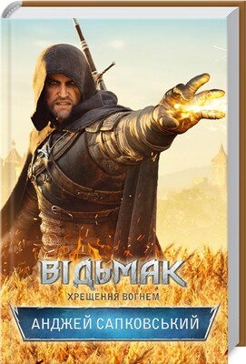

«Відьмак. Останнє бажання. Книга 1»
Опис книги
Від Яруги до Драконячих гір мандрує один з останніх відьмаків – Ґеральт із Рівії.
Він зустрічає людей та істот, які чимось дуже нагадують персонажів відомих казок, і намагається зрозуміти, чи залишилося в ньому самому хоч щось
від людини.
А може, він – тільки додаток до двох своїх мечів: звичайного залізного та відьмачого, з карбованим руків’ям та срібним клинком,
який колись стане для нього мечем призначення…
«Відьмак. Меч призначення. Книга 2»
Опис книги
Тепер Ґеральт знає, що таке кохання, знає, що він здатен на людські почуття і на найбільшу самопожертву... У його житті з’являється маленька зеленоока Цірі.
На королівства, які століттями воювали лише за перенесення межових знаків, нападає страшний ворог із-за південних гір. І відьмаку все одно:
чия ллється кров — людей, дріад чи ельфів...
«Відьмак. Кров ельфів. Книга 3»
Опис книги
Героїчна сага Анджея Сапковського про відьмака Ґеральта посідає четверте місце за накладами у Польщі, нагороджена преміями імені Януша Зайделя,
преміями SFinks, а 2010 року автор отримав почесну нагороду Європейського співтовариства наукової фантастики EuroCon «Ґранд Майстер».
Маленька Цірі — дитя-несподіванка — стала більшою несподіванкою, ніж видавалось спочатку. Жахливі сни про загибель Цінтри руйнують її душу,
а чаклунський дар, що народжується, може зруйнувати тіло. Дати йому раду під силу лише могутній чарівниці Йеннефер. Тож Ґеральту не вдається
довго переховувати Цірі у Відьмачому Оселищі. Попереду небезпечна подорож, бо для багатьох маленька княжна Цінтри — останній аргумент: для Ради
Чародіїв, для чотирьох королів, для зловісних посланців Нільфгарду… І тільки Ґеральт оберігає сіроволосу дівчинку заради неї самої…
«Відьмак. Час погорди. Книга 4»
Опис книги
Героїчна сага Анджея Сапковського про відьмака Ґеральта посідає четверте місце за накладами у Польщі, нагороджена преміями імені Януша Зайделя,
преміями SFinks, а 2010 року автор отримав почесну нагороду Європейського співтовариства наукової фантастики EuroCon «Ґранд Майстер».
Згідно з давнім ельфійським пророцтвом, Цірі, Дитя Старшої Крові, мала змінити долю світу. Але поки зеленоока спадкоємиця трону Цінтри прямує під
захистом своїх названих батьків до чарівницького острову Танедд, світ уже невпізнавано змінився. Усюди, в усіх серцях війна, ненависть і погорда.
Для відьмака Ґеральта настав час заради порятунку Цірі обирати, на чиєму він боці.
«Відьмак. Хрещення вогнем. Книга 5»
Опис книги
Поки світ магів оговтується після катастрофи на Танедді, а королівства людей та ельфів готуються розпочати нову війну, відьмак Ґеральт, ледве
одужавши від ран у Брокілоні, вирушає на порятунок Цірі. Однак де її шукати, якщо Вежа Чайки зруйнована вщент, а у снах про названу дочку відьмак
бачить зовсім не те, що переповідають про її долю? Мандруючи в компанії поета Любистка, напівдріади Мільви, нільфгардця Кагіра та
п’ятсотлітнього вампіра Реґіса Ґеральт зрозуміє: він не може більше миритися з ріками крові, що проливаються навкруги. Люди і ельфи тепер
лютіші за створінь, з якими його навчено битись. Пройти хрещення вогнем і врятувати тільки Цірі відьмаку вже не досить...
«Відьмак. Вежа Ластівки. Книга 6»
Опис книги
Диво врятувало від смерті Цірі, коли на її очах гинула банда Щурів, що стали їй вірними друзями. Призначення привело її в болотяні нетрі до
пустельника та вигнанця Висоготи, де мудрість Старого Ворона допомогла Ластівці-Цірі знову стати на крило. Тепер вона ступила на свій шлях, повернула
магічну силу. Більше вона нікого не втратить і знайде містичну Вежу Ластівки, шлях до спасіння зі світу, що приречений загинути у війнах, зраді й
безчесті. Так судилося... Проте відьмак не вірить у пророцтва. Втративши чарівний амулет, він став просто Ґеральтом з Рівії. Він мчить на
порятунок Цірі — своєї названої доньки, на яку полюють імператор, королі й чарівники, хапаючись в останніх судомах, як за крихкий лід, за шанс
врятуватися ціною Старшої Крові... Магія Анджея Сапковського — у його вмінні з ліризмом і сарказмом створити уявний світ, кожен з мешканців якого,
кожне місце і кожна подія настільки нагадують нам світ реальний, сучасний, що відірватися від книжок неможливо. Саме тому героїчна сага про відьмака посідає
четверте місце за накладами у Польщі, нагороджена преміями імені Януша Зайделя, преміями SFinks, а 2010 року Анджей Сапковський отримав почесну нагороду
Європейського співтовариства наукової фантастики EuroCon «Ґранд Майстер».
«Відьмак. Володарка Озера. Книга 7»
Опис книги
Зеленоока Цірі продовжує пошуки Ґеральта і Йеннефер, вона стрибає поміж світами в пошуках відповідних часу й місця. Усі світи різні — безпроблемні,
де можна перепочити, і проблемні, де її то наздоганяють ельфи, то замахуються на життя аборигени. У рідному світі Цірі, далеко в майбутньому, є
ті, які прагнуть допомогти їй виконати призначене. Німуе — Володарка Озера — залучає силу снячих, щоб з’ясувати суперечливі моменти легенди про
відьмака й відьмачку та спрямувати Призначення у правильному напрямку. А тим часом іде війна між Нільфгардом й нордлінгами. І невідомо, що чекатиме
на відьмака, його друзів і знайомих у кінці шляху… Магія Анджея Сапковського — у його вмінні з ліризмом і сарказмом створити уявний світ, кожен з мешканців
якого, кожне місце і кожна подія настільки нагадують нам світ реальний, сучасний, що відірватися від книжок неможливо. Саме тому героїчна сага про відьмака
посідає четверте місце за накладами у Польщі, нагороджена преміями імені Януша Зайделя, преміями SFinks, а 2010 року Анджей Сапковський
отримав почесну нагороду Європейського співтовариства наукової фантастики EuroCon «Ґранд Майстер».
«Відьмак. Сезон гроз. Книга 8»
Опис книги
Відьмак, Ґеральт із Рівії продовжує свою боротьбу. У королівстві Керак на нього чекають нові випробування. Зараз він – мисливець за чудовиськами,
якого найняли для вбивства. Після знищення чергової небезпечної потвори, троє вдягнених у чорне мосьпанів арештовують Ґеральта. Тепер і він у біді:
його позбавили двох відьмацьких мечів. Він змушений докласти усіх зусиль, аби повернути зброю… Руда чародійка Литта Нейд, відома як Корал,
зваблює Ґеральта, у них починається бурхливий роман. Але кохана Йеннефер, з якою він стільки пройшов, не дає забути про себе… Інтриги королів і магів
продовжуються: гримить грім, бушують грози, історія йде далі… Магія Анджея Сапковського — у його вмінні з ліризмом і сарказмом створити уявний світ,
кожен з мешканців якого, кожне місце і кожна подія настільки нагадують нам світ реальний, сучасний, що відірватися від книжок неможливо.
Саме тому героїчна сага про відьмака посідає четверте місце за накладами у Польщі, нагороджена преміями імені Януша Зайделя, преміями SFinks,
а 2010 року Анджей Сапковський отримав почесну нагороду Європейського співтовариства наукової фантастики EuroCon «Ґранд Майстер».